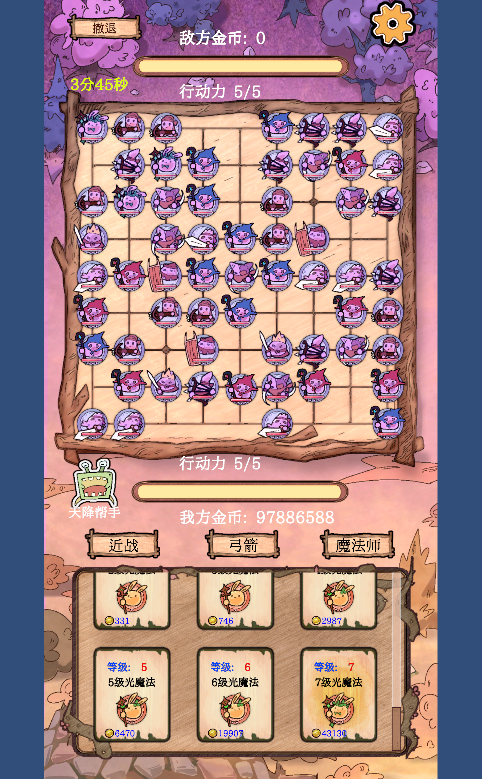

通过 在接近满盘（60/81 棋子）的战斗压力下，游戏稳定跑在帧率上限，主线程仅用掉约四分之一预算， 渲染线程 ~3ms、GPU 1–2ms。先前"棋子一多就掉帧"的问题没有复现。
注意
编辑器失焦时游戏会被节流（帧间隔飙到 ~100ms，但主线程只有 6.5ms）——
这是 PlayerSettings 里 runInBackground: 0 导致的编辑器行为，不是游戏性能问题；
测性能时必须让 Unity 窗口保持前台（或勾选 Run In Background），否则数据完全不可用。
| 项目 | 值 |
|---|---|
| Unity | 2022.3.15f1c1（WindowsEditor / DX11） |
| CPU | 12th Gen Intel Core i7-12700H（14 核 / 20 线程） |
| GPU | Intel Iris Xe Graphics（核显） |
| 内存 | 15.7 GB（Unity 进程工作集 2.85 GB） |
| 屏幕 | 1493 × 933（编辑器含 Game 视图 + Scene 视图 + Profiler 窗口） |
| 测试对象 | 全部关卡解锁 + 全部 65 个棋子解锁 + 一亿金币（调试菜单写入） |
编辑器内的测量包含编辑器自身开销（Scene 视图渲染 ≈2.9ms、Profiler 窗口 ≈1ms、编辑器 UI），真机数据通常会更好。
FrameTimingManager（MCP manage_profiler · get_frame_timing），每 25–30 秒采样一次，共 5 组。get_counters，Render / Memory 组），共 3 组。find_gameobjects(by_component=ChessPiece)，全程 60 个（未增长：AI 侧已停止落子、玩家侧无人操作）。battle_screenshot.png（见附录）。| # | 时刻(约) | 编辑器状态 | 帧间隔 | 主线程 | 渲染线程 | GPU | 棋子数 |
|---|---|---|---|---|---|---|---|
| 1 | 17:40:2x | 失焦（低负载/挂起期间） | 12.13 | 3.99 | 3.60 | 0.75 | 60 |
| 2 | 17:41:04 | 失焦（被节流） | 100.73 | 6.48 | 5.96 | 0.69 | 60 |
| 3 | 17:42:27 | 刚切回前台（过渡帧） | 99.04 | 21.04 | 2.14 | 1.10 | 60 |
| 4 | 17:43:41 | 前台稳定运行 | 14.03 | 4.38 | 3.51 | 1.09 | 60 |
| 5 | 17:44:5x | 前台稳定运行 | 13.02 | 4.78 | 3.23 | 1.96 | 60 |
| 指标 | 值 | 说明 |
|---|---|---|
| 主线程帧耗时 | 4.15 ms | 游戏逻辑 + 逻辑侧提交（16.7ms 预算的 25%） |
| 渲染线程帧耗时 | 2.85 ms | 渲染命令处理 |
| GPU 帧耗时 | 1.10 ms | 2D 精灵 + 图集合批后的实际 GPU 成本 |
| CPU 总帧耗时 | 11.19 ms | 含等待/同步；对应帧率 ≥60 |
| 指标 | 值 | 说明 |
|---|---|---|
| DrawCall | 42 | 60 个棋子（含底座/血条/被围标识子物体）+ UI 全算在内 |
| SetPass | 18 | 合批效果良好 |
| 三角面 / 顶点 | 4358 / 11162 | 2D 精灵量级，可忽略 |
| 动态合批 DrawCall | 180 | SpriteRenderer 走动态合批 |
| 使用纹理 | 21 张 / 13.25 MB | 棋子立绘已合图集，贴图切换少 |
| 指标 | 值 | 说明 |
|---|---|---|
| 每帧 GC 分配 | 11.9 – 30.6 KB | 214–458 次分配/帧 → 会周期性触发 GC |
| GC 分配自身耗时 | 0.036 ms | GC.Alloc 计数器：不构成卡顿 |
| 托管堆已用 | 808 MB | 编辑器数值（含编辑器自身） |
| 纹理内存 | 327 MB | 编辑器数值（含编辑器内置资源） |
| 2D 物理内存 | 304 KB | 几乎为零：命中/点选未走重物理 |
| 音频内存 | 55 MB | 背景音乐 + 音效池 |
| 场景 GameObject 数 | 1154 | 含 UI、特效、子弹池 |
SpriteRenderer.PrepareNode 仅 0.46ms，
说明棋子渲染与逻辑都不再随数量线性恶化。
runInBackground: 0 时编辑器失焦 → 帧间隔 100ms、
但主线程只有 6.5ms，说明是"没在跑"而不是"跑不动"。后续所有性能对比都必须在 Unity 前台的条件下做，
或先把 Run In Background 勾上。
Canvas.Sort 1.89ms、
Canvas.GeometryJob 1.42ms、Canvas.PrepareBatches 0.60ms，
而 UIR.DrawChain 出现 18.68ms 的采样值（可能含多帧累计，仅供参考）。
UI 的合批/重建成本已经高于棋子本身。
CoroutinesDelayedCalls 读数 0），
剩余分配源需要开 Allocation Callstacks 定位。
profiler_start(enable_callstacks=true)）抓一次落子/攻击过程的分配栈，优先清掉每帧都发生的分配（字符串拼接、装箱、闭包、LINQ）。ABResMgr.isDebug 走 AB 流程，重点看加载期卡顿与图集显存（2048×2048）表现；编辑器数据不能代表手机。围_0001）目前只有被围的棋子才推进帧动画，已是最优；若要进一步省，可把它的帧率降到 10fps。
截图为采样结束时（约 17:43:50）的 Game 视图，包含 60 个棋子与 UI。
| 计数器 | 原始值 | 换算 |
|---|---|---|
| CPU Main Thread Frame Time | 4,145,800 ns | 4.15 ms |
| CPU Render Thread Frame Time | 2,853,100 ns | 2.85 ms |
| GPU Frame Time | 1,100,677 ns | 1.10 ms |
| CPU Total Frame Time | 11,185,500 ns | 11.19 ms |
| Batches / Draw Calls / SetPass | 42 / 42 / 18 | — |
| Triangles / Vertices | 4358 / 11162 | — |
| GC Allocated In Frame | 30,648 B | 30.6 KB |
| GC Allocation In Frame Count | 458 | 次/帧 |
| Canvas.Sort | 1,888,500 ns | 1.89 ms |
| Canvas.GeometryJob | 1,417,700 ns | 1.42 ms |
| Canvas.PrepareBatches | 596,200 ns | 0.60 ms |
| SpriteRenderer.PrepareNode | 457,700 ns | 0.46 ms |
| Camera.Render | 2,636,800 ns | 2.64 ms |
| SceneCamera.Render（编辑器开销） | 2,890,400 ns | 2.89 ms |
采样期间无游戏运行期报错。仅有一条与运行无关的历史问题：Google.IOSResolver.dll will not be loaded（ExternalDependencyManager），
以及首次运行 achieveList.tang 不存在的一次性提示。